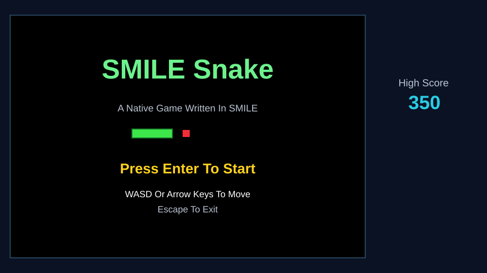
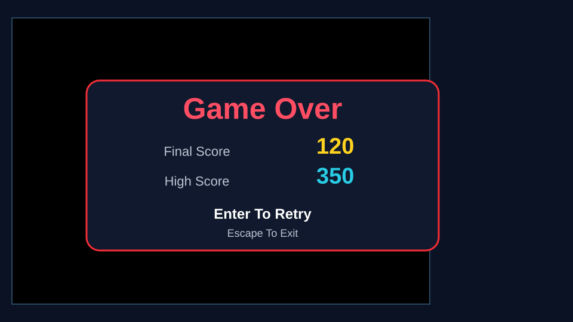

Paste checkpoint 8
Draw the Title and Game-Over Screens
The same drawing vocabulary can create instructions, feedback, and a clear next action.
8
Paste DrawTitle and DrawGameOver
These routines use the same basic shapes in two different ways.
Sub DrawTitle()
Clear Rgb(10, 18, 35)
Fill Rectangle FieldX, FieldY, FieldWidth, FieldHeight, BLACK
Draw Rectangle FieldX, FieldY, FieldWidth, FieldHeight, Rgb(40, 70, 95)
Fill Rectangle 260, 255, 80, 18, Rgb(60, 230, 75)
Draw Rectangle 260, 255, 80, 18, Rgb(20, 105, 35)
Fill Rectangle 360, 257, 14, 14, Rgb(245, 45, 55)
Draw Text "SMILE Snake" At 370, 140 Size 54 Color LIGHT_GREEN Centered
Draw Text "A Native Game Written In SMILE" At 370, 215 Size 19 Color LIGHT_GRAY Centered
Draw Text "Press Enter To Start" At 370, 335 Size 28 Color YELLOW Centered
Draw Text "WASD Or Arrow Keys To Move" At 370, 385 Size 18 Color WHITE Centered
Draw Text "Escape To Exit" At 370, 415 Size 18 Color LIGHT_GRAY Centered
Draw Text "High Score" At 835, 165 Size 20 Color LIGHT_GRAY Centered
Draw Number HighScore At 805, 205 Size 38 Color CYAN
End Sub
Sub DrawGameOver()
Fill Rounded Rectangle 145, 135, 590, 285, 22, Rgb(16, 25, 45)
Draw Rounded Rectangle 145, 135, 590, 285, 22, Rgb(245, 45, 55)
Draw Text "Game Over" At 440, 185 Size 50 Color RED Centered
Draw Text "Final Score" At 330, 255 Size 22 Color LIGHT_GRAY Centered
Draw Number Score At 530, 247 Size 38 Color YELLOW
Draw Text "High Score" At 330, 305 Size 22 Color LIGHT_GRAY Centered
Draw Number HighScore At 530, 297 Size 38 Color CYAN
Draw Text "Enter To Retry" At 440, 360 Size 24 Color WHITE Centered
Draw Text "Escape To Exit" At 440, 392 Size 18 Color LIGHT_GRAY Centered
End Sub

Rounded rectangles
Fill Rounded Rectangle
Draws a solid rectangle with curved corners. The radius controls how round the corners become.
Draw Rounded Rectangle
Draws only the curved outline, creating a bright border around the panel.
Repetition builds memory
Reinforce what you learned
Say it again
The title, board, and game-over panel are separate drawing jobs selected by State.
Recall it
Which routine draws the gameplay field before the game-over panel is placed over it?
Check your answer
DrawBoard. The main loop calls it again when State becomes 2.